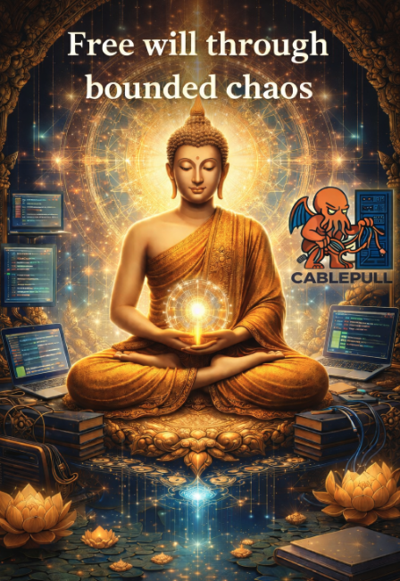

Longer notes on systems, control, and how we live with uncertainty—open a preview below to read the full piece.
…/articles/bounded-chaos.html

Free will through bounded chaos
Religion as civilizational control, a constitution for non-deterministic actors, and governing genAI without blind trust—select the card to read the essay.
More posts will land here as .html files (or a static generator) when they are ready.